HFVTTC 1
I had some vacuum tubes lying in a drawer forgotten and in the end I decided to make a project with the Soviet GU-50, it was the first time I used a vacuum tube and also a MOT so I have to say I was a bit nervous.
SCHEMATIC
since it was my first time using a vacuum tube I wanted to follow as closely as possible a schematic, so I based it on the circuit from Teslaundmehr of the HFVTTC
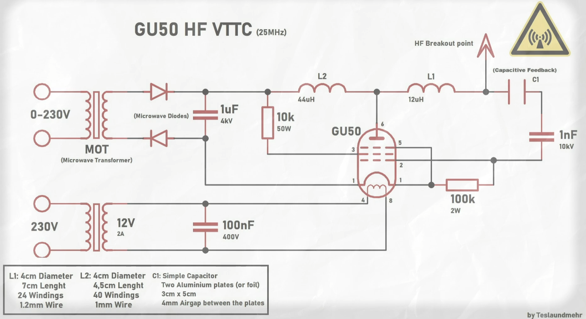
ASSEMBLY
the assembly was quite simple due to the few components it required, some changes I had to make were replacing the Soviet feedback capacitor with a bank of 9 ceramic capacitors that give the same capacitance and withstand more voltage and due to lack of rigid cable I had to make the resonator with flexible cable (bad idea)
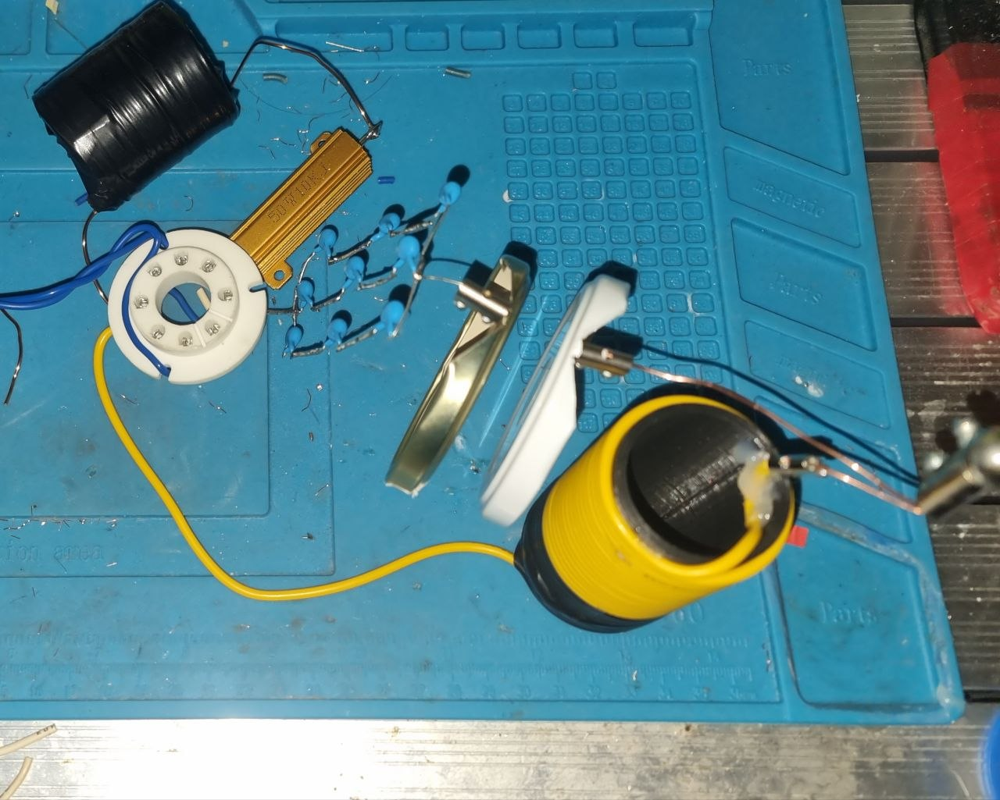
TEST TIME
after having everything assembled the time came to turn it on, but the result was not as I expected, the fluorescent lamp I had lit up but trying to activate the plasma flame was not stable, I also noticed that inside the tube quite a few arcs were jumping due to the poor performance and the consumption was mainly reactive.
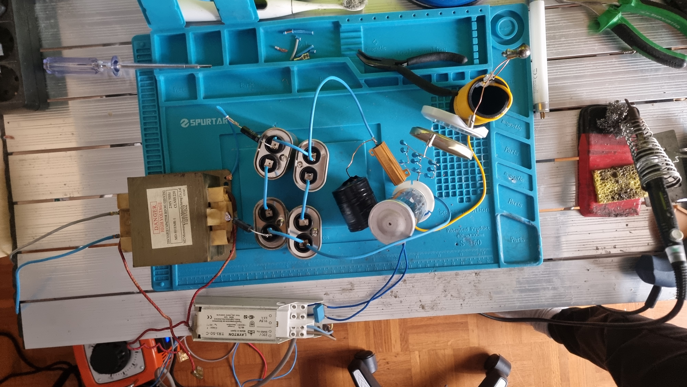
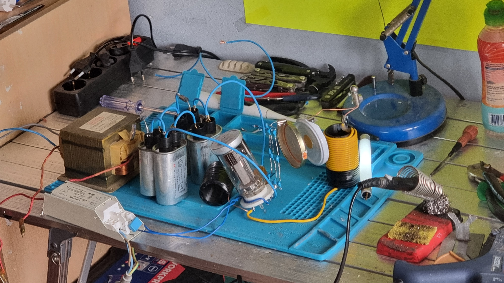
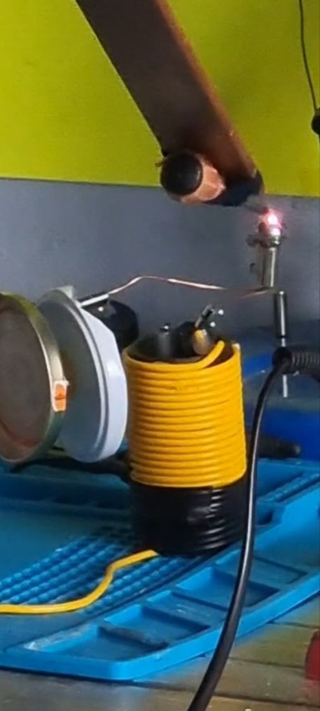
on top of that, because of using flexible cable it couldn’t handle the weight and the capacitor plate fell and burned part of the winding
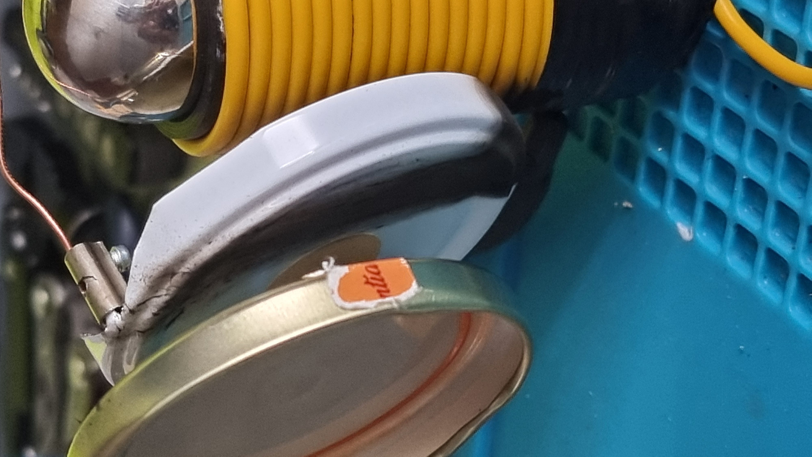
UPDATE (TROUBLESHOOTING AND TEST 2)
I knew it had something to do with the resonator and capacitive feedback, so I rewound the resonator (this time using solid wire), removed the ball where the plasma was supposed to form, and replaced the two-plate feedback capacitor with a ring-shaped one. Now the performance improved to what I expected and even more 😍, eliminating a large part of the reactive consumption and managing to generate a flame of more than 9 cm. Unlike the HFVTTC in Teslaundmehr’s video (which produced a nice stable CW flame), my circuit produced a strong sound at the mains frequency and the flame takes on the shape of that frequency (a mix between Teslaundmehr’s plasma flame and Styropyro’s diabolical ray). I’m not worried because I know that can be fixed with a full bridge or by increasing the capacitance. here are some photos of the results along with a video
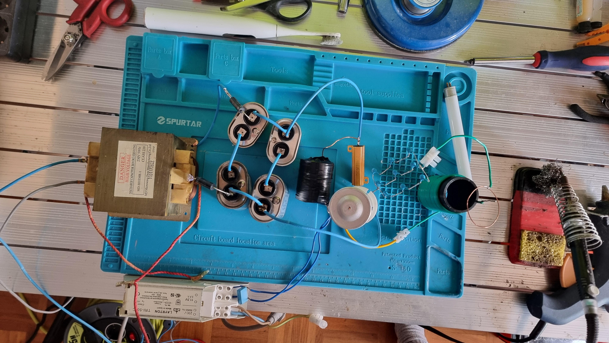
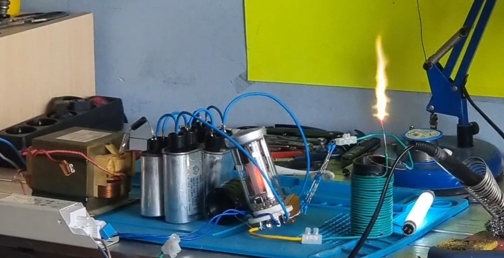
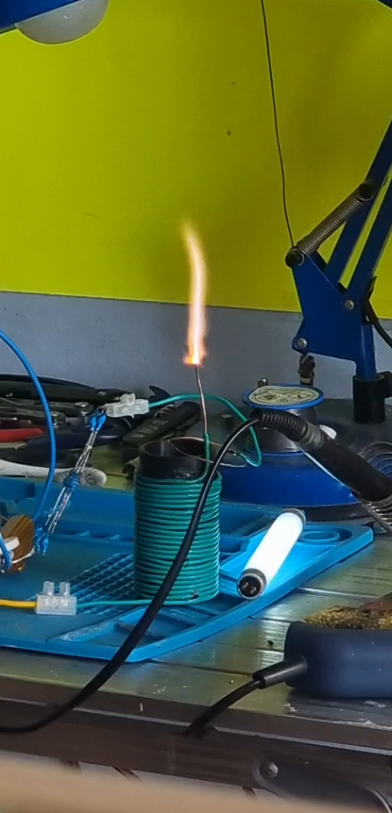
in conclusion I ended up quite happy with this project even though my GU-50 didn’t like it that much
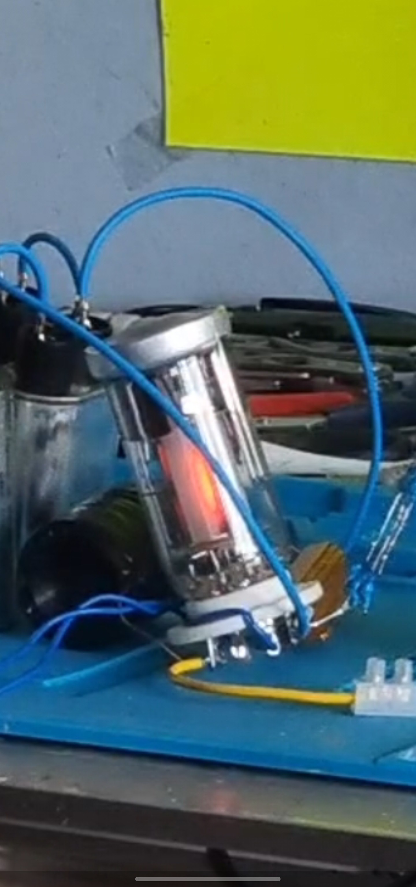
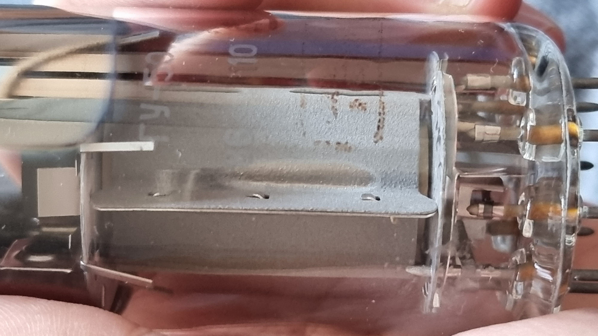
test1
test2
schematic
tube
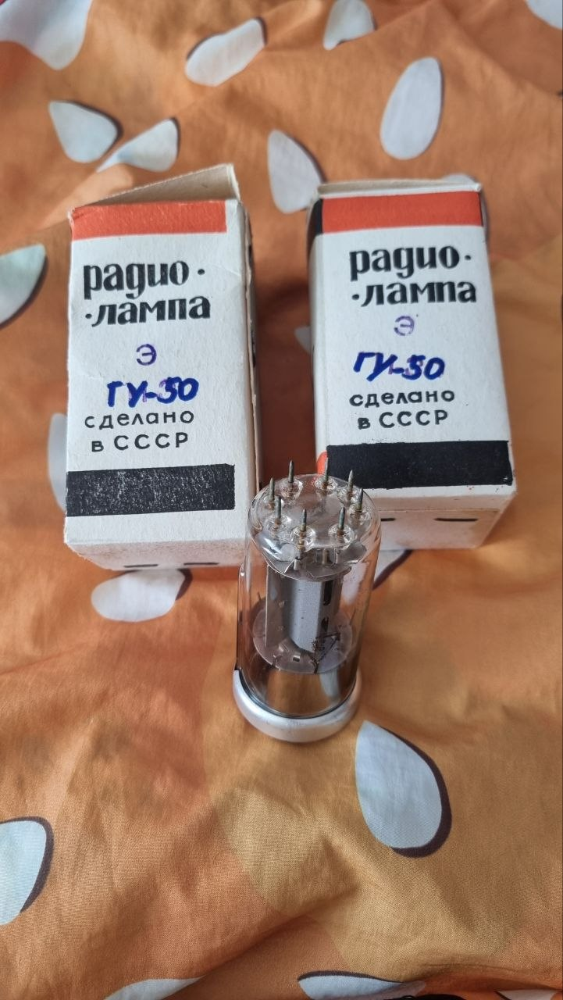
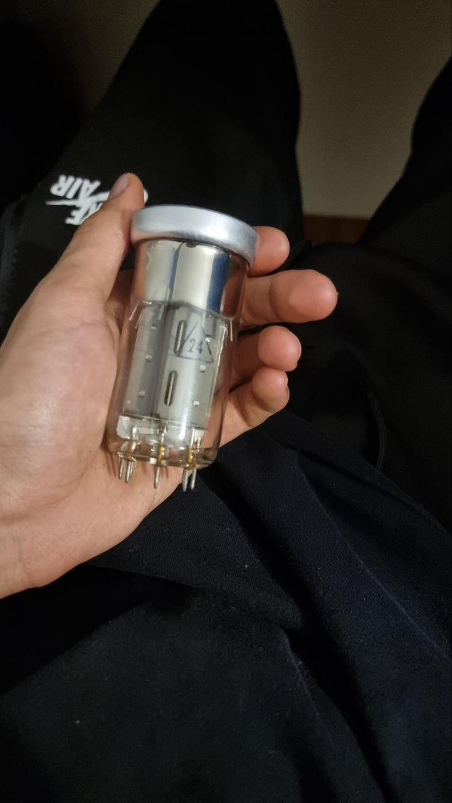